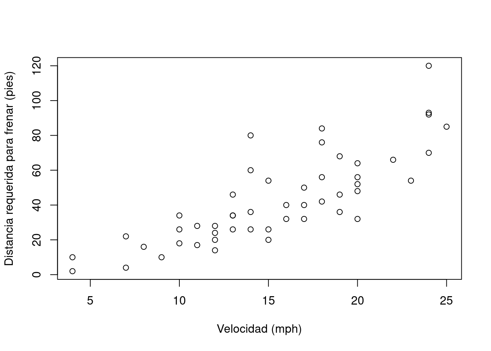

# Impresión de una hilera de caracteres
print("Hola mundo")[1] "Hola mundo"En este capítulo, se introduce el lenguaje de programación R.
R es un lenguaje de programación y un entorno para graficación y análisis estadístico. Como lenguaje, es interpretado, multiplataforma, de tipado dinámico y multiparadigma. Es un proyecto de software libre que se comparte mediante una licencia GNU GPL.
El código de R se estructura en funciones, las cuales se distribuyen en paquetes. Cada paquete contiene un conjunto de funciones relacionadas. Algunos paquetes están incorporados en la instalación base de R y otros deben instalarse separadamente.
R puede manejar diversos tipos de datos básicos, como números, textos y valores lógicos, entre otros. También tipos de datos compuestos, como factores y data frames. Al igual que otros lenguajes de programación, cuenta con estructuras de control como condicionales y ciclos.
Grolemund, G., & Wickham, H. (2014). Hands-On Programming with R: Write Your Own Functions And Simulations (capítulos 1 - 12). O’Reilly Media. https://rstudio-education.github.io/hopr/
R es un lenguaje de programación y un entorno enfocado en graficación y en análisis estadístico. Fue creado por Ross Ihaka y Robert Gentleman en la Universidad de Auckland, Nueva Zelanda, en 1993. Es ampliamente utilizado en diversas áreas de investigación, entre las que pueden mencionarse aprendizaje automático (machine learning), ciencia de datos (data science) y big data, con aplicaciones en campos como agricultura, biomedicina, bioinformática, finanzas, hidrología, teledetección y geografía entre muchos otros.
Algunas de las principales características del lenguaje de programación R son:
R es un proyecto de software libre que se comparte mediante una licencia GNU General Public Licence (GNU GPL). Esta característica permite que la funcionalidad original de R pueda ser ampliada mediante bibliotecas o paquetes desarrollados por la comunidad de programadores.
La Comprehensive R Archive Network (CRAN) es una red mundial distribuida de servidores que albergan el código y la documentación oficial de R y sus paquetes. Las tasks views de CRAN categorizan la funcionalidad de R de acuerdo con temáticas determinadas.
Para programar en R, puede utilizarse una interfaz de línea de comandos, editores de texto (ej. Visual Studio Code, Vim) y también ambientes de desarrollo integrados (IDE, en inglés Integrated Development Environment) como Jupyter o RStudio.
RStudio es el IDE más popular para el lenguaje R. Está disponible en una versión de escritorio (RStudio Desktop) y en una versión para servidor (RStudio Server). Esta última permite la conexión de varios usuarios a través de un navegador web. RStudio se ofrece también como un servicio en la nube, a través de RStudio Cloud. La Figura 3.1 muestra la interfaz de RStudio.

Además de edición de código fuente, RStudio contiene capacidades para depurar código y visualizar datos en formatos tabulares, gráficos y de mapas.
R, al igual que otros lenguajes de programación, estructura su funcionalidad en unidades de código fuente llamadas funciones. Cada función realiza una tarea específica como, por ejemplo, un cálculo matemático o el procesamiento de una hilera de texto.
Una función tiene un nombre y, opcionalmente, un conjunto de argumentos que especifican los datos de entrada que procesa la función. Los argumentos se escriben entre paréntesis redondos (()) y estos siempre deben incluirse, aún en el caso de que la función no tenga ningún argumento. Si la función tiene varios argumentos, deben separarse mediante comas (,). Por lo general, las funciones retornan un valor como salida.
La función print() recibe como argumento un valor (ej. un texto o un número) para imprimirlo en la pantalla. En el siguiente fragmento de código en R, se utiliza print() para imprimir la hilera “Hola mundo”. Nótese el uso del símbolo # para comentarios (i.e. texto que no es código ejecutable).
# Impresión de una hilera de caracteres
print("Hola mundo")[1] "Hola mundo"La función mean() retorna la media aritmética del argumento de entrada. En el siguiente ejemplo, se calcula la media de los números de un vector creado a su vez con la función c().
# Media aritmética
mean(c(2, 4, 5, 9))[1] 5La función getwd() (get working directory) retorna la ruta del directorio de trabajo de la sesión actual de R. Este es el directorio en el cual R espera encontrar, por ejemplo, archivos de datos.
# Impresión del directorio de trabajo
getwd()[1] "/home/rstudio/2024-i"La función setwd() (set working directory) establece la ruta del directorio de trabajo de la sesión actual de R. Como argumento, recibe una hilera de texto con la ruta.
Note las barras utilizadas para separar los subdirectorios: / (no \)
# Especificación del directorio de trabajo (la ruta debe existir)
setwd("C:/Users/mfvargas")Ejercicios
1. Obtenga la ruta de su directorio de trabajo con la función getwd().
2. Si lo desea, cambie la ruta de su directorio de trabajo con la función setwd(). Verifique el cambio usando nuevamente getwd().
Los argumentos de las funciones tienen nombres que pueden especificarse, en caso de ser necesario, al llamar la función. En algunos casos, el orden y el tipo de datos de los argumentos permiten que el interpretador de R conozca cuál es cada uno, sin necesidad de escribir sus nombres.
En el siguiente ejemplo, se utilizan los argumentos x, xlab y ylab de la función plot(), para especificar la fuente de datos y las etiquetas de los ejes x e y de un gráfico de dispersión.
# Gráfico de dispersón del conjunto de datos "cars" con etiquetas en los ejes x e y
plot(
x=cars$speed,
y=cars$dist,
xlab="Velocidad (mph)",
ylab="Distancia requerida para frenar (pies)"
)
Ejercicios
1. Estudie la documentación de la función plot() y agregue al gráfico anterior:
a. Un título.
b. Un subtítulo.
Para obtener ayuda sobre una función desde la línea de comandos de R, puede utilizarse un signo de pregunta (?) seguido del nombre de la función o bien la función help(). Por ejemplo:
# Ayuda de la función setwd()
?setwd
help(setwd)También puede utilizarse la función apropos(), para buscar funciones por palabras clave.
# Búsqueda, por palabras clave, de funciones relacionadas con "mean" (media aritmética). Note las comillas ("").
apropos("mean") [1] ".colMeans" ".rowMeans" "colMeans" "kmeans"
[5] "mean" "mean.Date" "mean.default" "mean.difftime"
[9] "mean.POSIXct" "mean.POSIXlt" "rowMeans" "weighted.mean"La función example() presenta ejemplos sobre el uso de una función.
# Ejemplos de uso de la función mean()
example("mean")
mean> x <- c(0:10, 50)
mean> xm <- mean(x)
mean> c(xm, mean(x, trim = 0.10))
[1] 8.75 5.50Por otra parte, el sitio All R Documentation reúne documentación de funciones de una gran cantidad de paquetes de R.
También puede obtenerse ayuda en buscadores de Internet, como Google, o en sitios de preguntas y respuestas para programadores, como Stack Overflow.